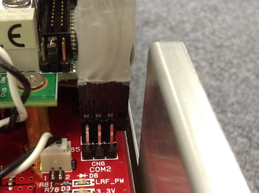

ここでは、初めにRoboCarのネットワークを設定し、イーサネットケーブル、あるいはwifiなどの無線通信でRoboCarのOSにログインできるまでの手順を解説します。
また、ライブラリの参照やサンプルの実行に必要な環境変数の設定も併せて解説します。
設定の前に、以下のものをあらかじめ装着する必要があります。
情報系のバッテリーは必須です。単三電池12本をご用意ください（充電池の使用をお勧めします）。別途購入が必要ですが、情報系ボードに接続できるACアダプターもございます。
駆動用のバッテリーは、付属品である専用の電池をお使いください。ネットワーク設定には必須ではありませんが、サンプルを動かす際に必要な場合もあるため、起動する前に接続することをお勧めします。
なお、使用後は必ず電源ケーブルをどちらも外してください
シリアル通信、およびネットワーク通信用のアダプタをRoboCarに装着しておきます。
シリアル通信(RS232C)用のアダプタは必須です。
ネットワーク用については、ご利用の環境に合わせて選択します。利用しないほうのアダプタを外しておくと、OSの起動が早くなります。
以下のようにバッテリーを接続します。
図: コネクタをとおす
図: 接続
図: 固定する
図: 電池ボックスをいれる
図: コネクタの接続
ネットワークを介してRoboCarにログインするための手順は、以下の通りになります。
シリアルコンソールからLinuxにログイン
ネットワーク接続の準備をする（LANケーブル、または無線通信モジュールを接続）
ネットワークの設定（簡易設定ツール、または手動で設定ファイルを編集）を行い、ログアウトする
sshでアクセスすることで、ネットワーク経由のログインを行う
ネットワークを設定するために、シリアルコンソールからログインします。 シリアルケーブル（クロス）を、接続してください。
シリアル通信用アダプタの挿し方は、下図のように奥の端子へ、ピンの金属が見えて、ソケットの余りの部分がボードの外側になる向きに挿してください。
なお、ピン配置はボード外枠に近い方から、GND、TxD、RxDになります。

図: シリアルケーブルの接続
シリアル通信を行うため、ターミナルソフトウェア（Tera Termなど）を起動します。シリアルポートの設定は以下です。なお、文字コードはUTF-8です。
rate=115200bps data=8bit parity=none stop=1bit
接続を確認して電源スイッチをONにします。
Linuxシステムがロードされます。30秒ほどで、シリアルコンソールに起動メッセージが出力されます。
Fedora release 10 (Cambridge)
Kernel 2.6.26.8-rt13-zmprc01 on an i586 (/dev/ttyS0)
localhost.localdomain login:
login: と表示されたら、以下のアカウントでログインします。
login: root
pass: root254
（＊事前に、シリアルコンソールを介してのネットワーク設定が必要です）
（＊ネットワーク設定は、以下の「ネットワークの簡易設定ツール」、または「ネットワークの設定」を参照）
sshでアクセスします。
上記アカウントでログインします。
ログインが完了すると、bashの使える環境になっています。
図: SSHでのログイン
以下のコマンドを入力して、シャットダウン動作が終了したら、電源をOFFします。
shutdown -h now
rc_netconfig.shというツールがインストールされています。 簡単に無線LANの設定を行うことができます。
このツールは、ファイル'/etc/sysconfig/network-scripts/ifcfg-wlan0'を 自動で作成して上書きします。 viエディタになれている方は、直接ファイルを編集することを お勧めします。
rc_netconfig.shとしてください。
メッセージにしたがって、SSID, WEP key, DHCPの使用, IPアドレス を入力します。最後にセーブしてよいか聞かれるので、's'と入力してセーブします。
# rc_netconfig.sh
=======================================================
[ RoboCar netconfig tool v1.0]
Notice: This program will overwrite the
file /etc/sysconfig/network-scripts/ifcfg-wlan0
or /etc/sysconfig/network-scripts/ifcfg-wlan0.
It only support WEP.
--[eth0]------------------
BOOTPROTO=dhcp
--[wlan0]-----------------
ESSID=
KEY=
BOOTPROTO=
--------------------------
Choose the interface to setup.
[1] eth0 (Wired LAN)
[2] wlan0 (Wire-less LAN)
>2
Searching now...
Select access point by number or bellow command.
[r] Refresh access point list.
[m] Input Manually.
-no---SSID----------------------------Encryption-
[ 0] ABCDEFGHIHGLMN on WEP
>0
Please select wep strins format.
[1] by hex-decimal
[2] by text
>1
Please input WEP key
>YYYYYYYYYY
Use static IP address or DHCP.
[1] Use DHCP.
[2] Use static IP address.
>2
Please input IP addres. (ex. 192.168.1.101)
>192.168.1.222
Please input Netmask. (ex. 255.255.255.0)
>255.255.255.0
---------------------
IF : wlan0
SSID : ABCDEFGHIHGLMN
KEY : YYYYYYYYYY
DHCP : no
IPADDR : 192.168.1.222
NETMASK : 255.255.255.0
---------------------
Save the result to file ?
[s] OK. Save to file.
[r] no. clear result and Re-input all.
[q] no. Quit without save.
>s
ネットワークの有効/無効の切り替えや確認は、手動で行ってください。
例)
# ifdown wlan0
# ifup wlan0
# ifconfig
# ping 192.168.1.1
出荷時の設定では、「有線ネットワーク(eht0)を使用」「DHCP」となっています。 お使いの環境に合わせて設定しなおしてください。
手動で設定する場合は、以下の方法で設定できます。
Linuxでのファイル編集については、10章「Linuxの使い方」のエディタviにも記載しています。
cd /etc/sysconfig/network-scripts
vi ifcfg-wlan0
RoboCarの無線LANアダプタが接続されていることを確認する。
有線LANが有効になっている場合、それを無効にする。
ifdown eth0
ifup wlan0
シリアルコンソールからログインします
ディレクトリ /etc/sysconfig/network-scripts に移動
cd /etc/sysconfig/network-scripts
vi ifcfg-eth0
LANケーブルが接続されていることを確認する。
無線LANが有効になっている場合、それを無効にする。
ifdown wlan0
ifup eth0
/etc/sysconfig/network-scripts/ifcfg-wlan0
DEVICE=wlan0
BOOTPROTO=dhcp
ONBOOT=no
ESSID=XXXXXXXX
KEY=YYYYYYYY
/etc/sysconfig/network-scripts/ifcfg-wlan0
DEVICE=wlan0
BOOTPROTO=none
ONBOOT=no
ESSID=XXXXXXXX
KEY=YYYYYYYY
NETWORK=192.168.0.0
NETMASK=255.255.255.0
IPADDR=192.168.0.100
/etc/sysconfig/network-scripts/ifcfg-eth0
DEVICE=eth0
ONBOOT=yes
BOOTPROTO=dhcp
/etc/sysconfig/network-scripts/ifcfg-eth0
DEVICE=eth0
BOOTPROTO=none
ONBOOT=yes
NETWORK=192.168.0.0
NETMASK=255.255.255.0
IPADDR=192.168.0.100
RoboCarは、OSとしてLinuxを採用し、標準のネットワークプロトコルである TCP/IPを使用してネットワークに参加します。
常時起動しているシステムではなく、 ホストPCとの連携や、車車間通信などのネットワークを介したユーザのアプリケーション を構築しやすさを優先させているため、LinuxのセキュリティシステムをほぼOFFにしています。
既存のネットワークやLANに接続する場合は、セキュリティ面に十分注意して、設定を変更してから接続してください。 RoboCar専用にネットワークを構築することを強く推奨いたします。
RoboCarはFTPサーバとなっています。 外部からftpによってファイルの送受信が可能です。アカウント名ftpとしてログインしてください。
コマンドプロンプトを起動します。
C:\>
ftpコマンドで、RoboCarのIPアドレスを指定して接続します。Userに'ftp'としてください。 passは、任意の文字列で構いません（パスワードは使用しない）。
C:\> ftp 192.168.0.100
Connected to 192.168.0.100
220 FTP Server ready.
User (192.168.0.100:(none)): ftp
331 Anonymous logi ok, send your complete email address as your password
Password: (任意の文字列)
230 Anonymous login ok, restrictions apply.
ftp>
ファイルを送信する場合は、'uploads'へ移動してからputしてください。
ftp> cd uploads
ftp> put file.txt
バイナリファイルの場合は、忘れずにbinコマンドでバイナリモードにしてください。
ftp> bin
ftp> put files.zip
終了は、byです。
ftp> by
上記方法でログインすると、以下のディレクトリが見られます。ファイルのやり取りをする場合、 ftpコマンドでファイルを転送したあと、このディレクトリから、cpコマンドでコピーして 任意の場所にファイルを移動してください。
/var/ftp
uploadsは送信用となっており、書き込み可能です。pubは受信用となっています。
/var/ftp/uploads
/var/ftp/pub
Linux内のファイルシステムにインストールされたRoboCarのシステムへアクセスできるよう、実行パス、共有ライブラリ検索パスを追加しています。
また、ライブラリ内から使用する、設定ファイルやデータの保存先を示す変数として、ZRCCONFIGPATHを設定しています。
PLXSDKDIRは、画像認識ボードへのアクセス用のドライバ、ライブラリのインストールパスです。
ファイル "zrc.sh" を編集します。
vi /etc/profile.d/zrc.sh
export PLXSDKDIR=/usr/src/PlxSdk
export LDLIBRARYPATH=$LDLIBRARYPATH:/usr/local/lib/zmp:/usr/local/lib/curg
export ZRCCONFIG_PATH=/root/zmp/config
export PATH=$PATH:/usr/local/bin/zmp
（そのまま、次章にお進みいただいて構いません。）
RoboCarには、ipm_serialという電源制御ツールがインストールされています。 CPUボードからシリアル通信を通じて、電源回路を操作することができるツールです。
外部から強制でハードウェアリセットをかけたい場合や、 電池の消費を抑えたいときに使用してください。
ログインしたままの状態（コマンド"cd "と入力した先のディレクトリ）で、以下のコマンドを入力してください。
ipm_serial (コマンド) (パラメータ1) (パラメータ2)
コマンド
'S'が電源のOn/Off、'R'がリセットです。 'P'で、現在のバッテリー状態を取得します。
Sコマンド
電源制御の対象と、OnかOff、二つのパラメータを指定します。
Rコマンド
一つのパラメータを指定します。
Pコマンド
パラメータはありません。 実行すると、4つの数字が表示されます。それぞれ以下の値です。
- 駆動系バッテリの電圧[V]
- 5V系電源電圧[V]
- 3V系電源電圧[V]
- 情報系バッテリの電圧[V]
ipm_serial S 0x04 1
ipm_serial S 0x04 0
ipm_serial S 0x01 1
ipm_serial S 0x01 0
ipm_serial R 0x01
ipm_serial P